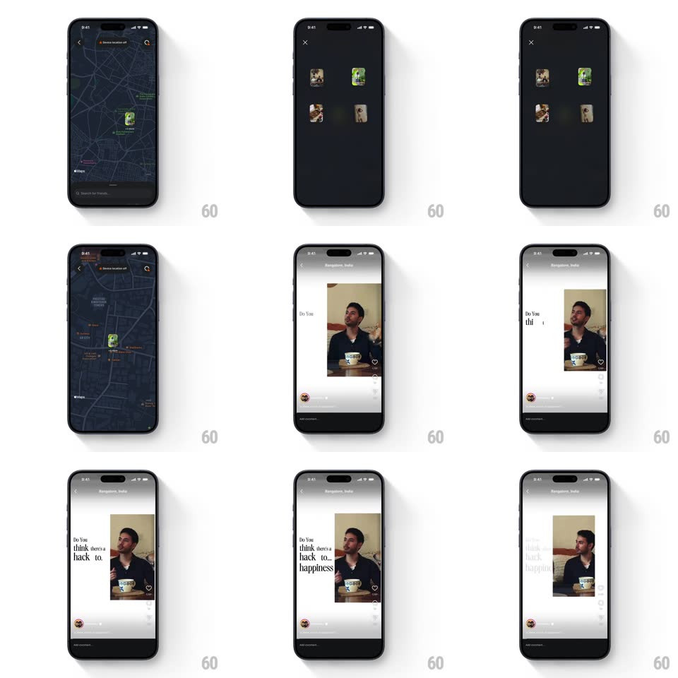

Media
Frame-by-frame

Rebuild this interaction 1:1: Instagram's reels-on-map - tapping a reel thumbnail pin on the dark map (Bengaluru) fans the location's reels out, then the tapped one zooms as a shared element into the full-screen vertical player where animated caption text types on beside the video.

Rebuild this interaction 1:1: Instagram's reels-on-map - tapping a reel thumbnail pin on the dark map (Bengaluru) fans the location's reels out, then the tapped one zooms as a shared element into the full-screen vertical player where animated caption text types on beside the video.
## Integration
Integration: stack-agnostic spec - springs given as stiffness/damping, timed motions as duration + curve; map every value to your framework and animation library of choice.
## Scene
Dark map view: city map with small rounded reel thumbnails pinned at locations, search bar and "Search for friends" bottom sheet. Preview state: thumbnails fan into a row at top. Player: full-screen vertical reel (two people at a cafe table) with like/comment/share rail, creator avatar, and big serif caption text typing on the left ("Do You think there's a hack to_ happiness").
## Motion spec
Pattern: shared-element map-to-player zoom, ~500ms.
- Fan: tapping a pin spreads its reel thumbnails into a horizontal row (spring ~320/22, 90ms stagger), dimming the map (200ms).
- Zoom: tapping a thumbnail scales it from its pin rect to full-screen (450ms, ease-in-out), corner radius 12px -> 0, the map fading to black behind (300ms).
- Player: the reel's UI rail fades in (250ms, +150ms) and the caption text types on word by word (each word pops in, 120ms per word, slight scale 0.9 -> 1).
- Exit: closing reverses the zoom back into the pin (400ms).
## Calibration
- The zoomed element is the pin's thumbnail itself - same image, continuous geometry.
- Caption typing starts only after the zoom fully settles.
## Reduced motion
Reel fades in full-screen (250ms); caption appears complete.
## Don't miss
- The caption is oversized serif on the left half, overlapping the video - not a subtitle bar.
- The map stays live underneath; closing returns to the exact same camera position.